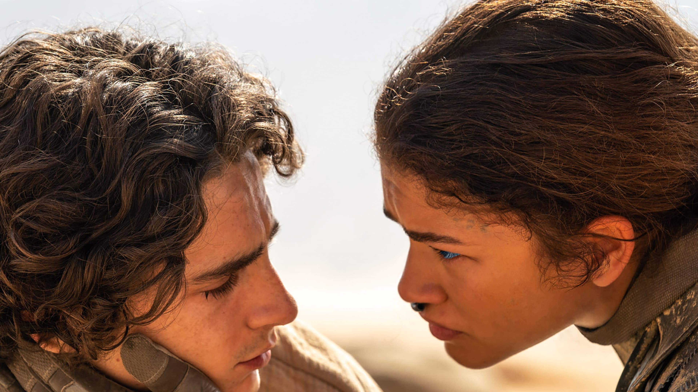

‘Dune: Part 2’ DP Greig Fraser Believes Zendaya May Direct Soon
The visions are clear now — Dune: Part Two is a visual feast for the eyes. Directed by Denis Villeneuve, Dune: Part Two continues the story of Paul Atreides (Timothée Chalamet), as he rises to power as a mythic figure to the Fremen; yet, the power he gains, the greater threat he poses, leading to all-out galactic war. The film has an all-star cast that includes Rebecca Ferguson, Josh Brolin, and Christopher Walken.

Part of what makes Dune: Part Two such an achievement is its mind-blowing cinematography, courtesy of Greig Fraser. After winning the Academy Award for Best Cinematography for Dune: Part One, he takes the visual storytelling to the next level in the sequel. Fraser is also known for his work on Rogue One: A Star Wars Story and The Batman.
FRASER: I'm proud, of course. I mean, we worked hard. I worked hard, but let me tell you how hard Denis [Villeneuve] worked on the film. He's been up to here [raises hand] in sand since 2018, 2019. The fact that he's made Dune, he's made the book that basically started him on this journey. So for me, I'm really proud of him, not in a sort of a paternal way, of course, but just in a bro sort of way. He's done... he's made it. He's made his film. I think I'd probably be aligned with my collaborators here to kind of hope that we have helped him make his film as well as he dreamed it as a child when he was first reading the book.
Greig Fraser Reveals Why He’s Most Proud of the Sandworm Sequence
Yes, the characters in Liu Kang's new timeline are re-imagined versions of their previous counterparts, but sometimes old habits die hard. Although characters may be vastly different from their previous versions in some ways, there are still plenty of personality and story similarities that bleed through from their previous backgrounds that could be difficult for newcomers to pick up on. Despite what the name suggests, Mortal Kombat 1 isn't just about the Fatalities. There is a deep ongoing lore that still carries through to the current era, even if the characters themselves don't realize it.
It sounds like the way that the two of you have collaborated on this has really brought what was deemed unadaptable to life, which is such a feat and an achievement.When you think back on your time making it Dune: Part Two, is there a sequence or a scene that you're most proud of capturing and why?
FRASER: You know, I've said it a few times in the past about the sandworm riding. I love the fact that...that's so good. I love that sequence. I'm really proud of the way we captured it because it wasn't easy. It wasn't something that was simple to capture, and it wasn't simple to shoot. It was probably one of the, I wouldn't say, it was probably one of the more complicated sequences that I've done because it had a high probability of not getting it right. Do you know what I mean? There was a high probability that we could have screwed up and made some mistakes along the way. You know, it's that high failure opportunity, so we were quite diligent about making sure that we didn't let shots through that weren't quite right. Because we realized that if you did that once, or maybe twice, or maybe three times... over the course of eight, nine, ten shots, the sequence would still be okay and still be good, still have great music, but it may not have that same visceral impact. I feel like we were quite diligent about making sure that we were really... precise when it came to getting that sequence.